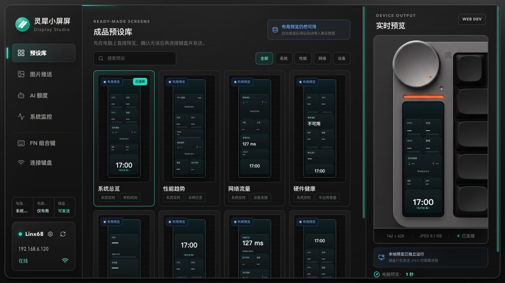
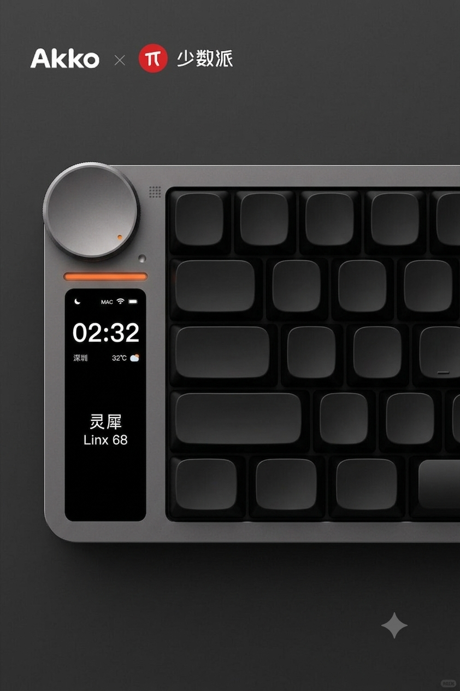
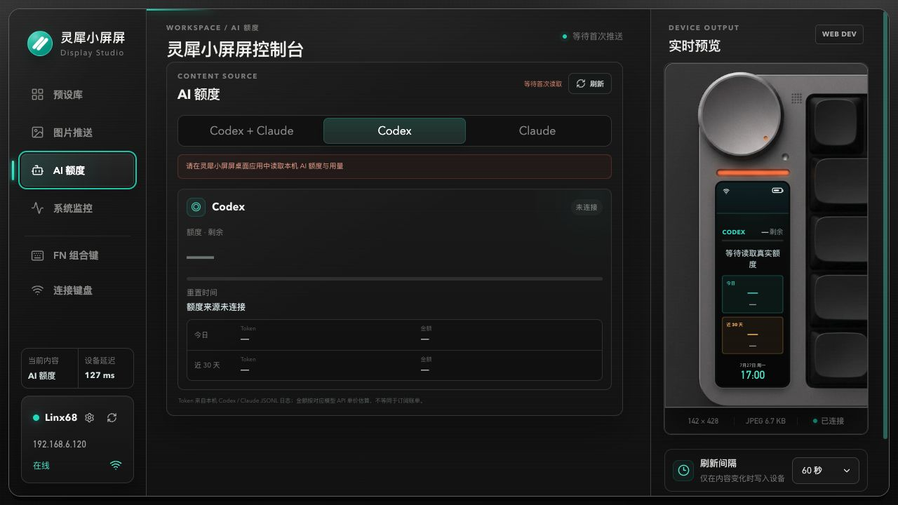
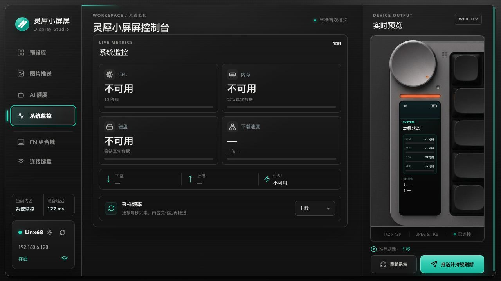

01 / READY-MADE SCREENS
一套预设，直接把状态放上小屏。
从系统总览、性能趋势到网络流量，先在电脑端预览最终效果，再把 142 × 428 的 JPEG 精准推送到 Linx68。
- 8 个成品预设
- 电脑端实时预览
- 精准裁切

LINX68 小屏控制中枢 · macOS / WINDOWS
灵犀小屏屏是一款本地优先的桌面工具。把 AI 额度、系统性能与图片内容，做成真正适合窄长屏幕的信息界面。

THE SMALL SCREEN, RECONSIDERED
每一种内容都针对窄长屏重新排版：足够远也能读懂，数据层级清晰， 不把有限像素浪费在装饰上。
01 / READY-MADE SCREENS
从系统总览、性能趋势到网络流量，先在电脑端预览最终效果，再把 142 × 428 的 JPEG 精准推送到 Linx68。

02 / AI USAGE
读取本机已有会话和日志，在键盘小屏上呈现额度窗口、重置时间、Token 与金额估算。重要信息始终在视线边缘。

03 / LIVE METRICS
CPU、内存、GPU、系统盘与网络速度按秒采集；桌面端负责计算，小屏只显示最重要的结果。

MADE FOR THE NARROW CANVAS
每个模板都在真实分辨率下渲染，生成基线 JPEG，并在推送前校验尺寸与文件大小。
本周额度剩余
LOCAL BY DESIGN
设备 IP、AI 会话和本机日志只在本地读取。应用不会上传认证信息或工作记录； 小屏设备只接收最终生成的 JPEG。
LINGXI DISPLAY STUDIO
面向 macOS 与 Windows。首个 GitHub Release 正在准备中。